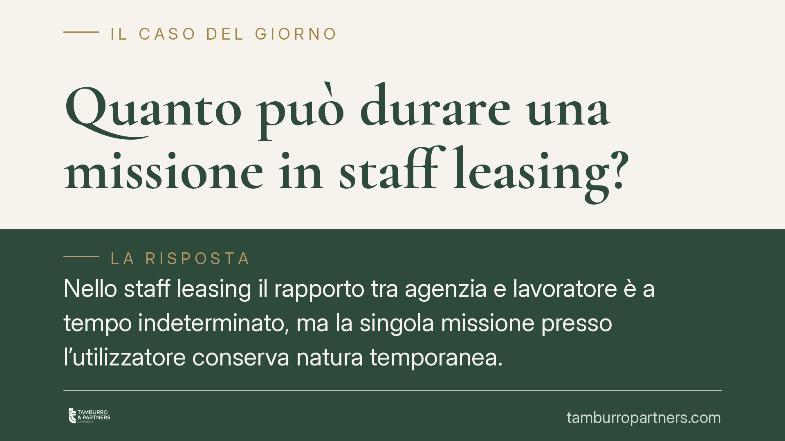

Quanto può durare una missione in staff leasing?
Nello staff leasing il rapporto tra agenzia e lavoratore è a tempo indeterminato, ma la singola missione presso l'utilizzatore conserva natura temporanea. Una permanenza priva di ragioni oggettive espone l'azienda utilizzatrice a rischi di riqualificazione. Il tema torna centrale dopo gli approdi della giurisprudenza europea sulla durata delle missioni.

Il quadro normativo
Lo staff leasing è la somministrazione di lavoro a tempo indeterminato, disciplinata dagli artt. 30 e seguenti del D.Lgs. 81/2015. In particolare, l'art. 31, comma 1, ne fissa i limiti quantitativi: il numero dei lavoratori somministrati a tempo indeterminato non può superare il 20% dei lavoratori a tempo indeterminato in forza presso l'utilizzatore al 1° gennaio dell'anno di stipula del contratto, salva diversa previsione dei contratti collettivi.
Nel modello coesistono due rapporti distinti. Il primo, a tempo indeterminato, lega l'Agenzia per il Lavoro (APL) al lavoratore: l'APL resta il datore di lavoro formale. Il secondo, la singola missione, colloca il lavoratore presso l'azienda utilizzatrice, che ne dirige la prestazione. La stabilità del contratto APL-lavoratore non implica la stabilità della permanenza presso il medesimo utilizzatore.
Il nodo: la natura temporanea della missione
È qui che si concentra il problema. La direttiva 2008/104/CE, sul lavoro tramite agenzia interinale, muove dal presupposto che l'assegnazione del lavoratore all'impresa utilizzatrice abbia carattere temporaneo.
La Corte di Giustizia UE, con la sentenza 17 marzo 2022, causa C-232/20 (Daimler), ha chiarito che missioni successive presso la stessa utilizzatrice, tali da superare una durata ragionevolmente qualificabile come temporanea, possono integrare un abuso del ricorso alla somministrazione. La Corte non ha fissato un limite temporale rigido, ma ha richiesto che l'assegnazione risponda a ragioni oggettive: esigenze effettivamente circoscritte nel tempo o riconducibili a una specifica funzione, non alla copertura stabile di un fabbisogno strutturale dell'utilizzatore.
È il concetto di "ragione oggettiva" a orientare il giudizio. Non basta la qualificazione formale del contratto: rileva l'uso concreto che l'utilizzatore fa della missione. Quando la somministrazione a tempo indeterminato serve, di fatto, a occupare in modo permanente una posizione ordinaria dell'organizzazione, il carattere temporaneo si svuota.
Sul piano interno, l'orientamento della giurisprudenza di merito che ricava dalla violazione di questi principi una riqualificazione del rapporto in capo all'utilizzatore non può dirsi ancora consolidato. Segnaliamo con trasparenza che si tratta di indirizzi in evoluzione, non di un principio pacificamente affermato dalla Cassazione con pronunce di indirizzo univoco sul punto specifico della durata.
I rischi per l'utilizzatore
Una missione protratta oltre misura, senza ragioni oggettive documentabili, può esporre l'azienda utilizzatrice a contestazioni. La conseguenza più rilevante è la domanda giudiziale di costituzione di un rapporto di lavoro subordinato direttamente in capo all'utilizzatore, con i relativi profili economici e contributivi.
A ciò si aggiungono i rischi collegati al superamento del tetto del 20% previsto dall'art. 31, comma 1, e alle sanzioni amministrative connesse alla somministrazione irregolare.
Implicazioni pratiche
Per l'utilizzatore il messaggio è netto: lo staff leasing non è uno strumento per stabilizzare in modo indiretto una posizione strutturale. La legittimità dell'operazione va verificata non solo alla stipula, ma lungo tutta la durata della missione.
Per il lavoratore, l'inquadramento come somministrato a tempo indeterminato non lo priva della possibilità di far valere l'eventuale uso abusivo della missione presso una determinata utilizzatrice.
Cosa fare in concreto
- Verificate periodicamente il rispetto del tetto del 20% previsto dall'art. 31, comma 1, D.Lgs. 81/2015, calcolato sul dato al 1° gennaio.
- Documentate le ragioni oggettive che giustificano la permanenza del singolo lavoratore presso l'utilizzatore, aggiornandole nel tempo.
- Distinguete con chiarezza le posizioni strutturali dell'organizzazione da quelle effettivamente coperte con missioni temporanee.
- Conservate contratto commerciale APL-utilizzatore e contratto di lavoro APL-lavoratore, con le rispettive causali.
- È opportuno un audit periodico dei contratti di somministrazione, per intercettare per tempo situazioni di missione prolungata priva di giustificazione.
In sintesi
La durata della missione in staff leasing non è illimitata. Il contratto APL-lavoratore è a tempo indeterminato, ma l'assegnazione all'utilizzatore resta temporanea e va sorretta da ragioni oggettive. In mancanza, l'utilizzatore assume un rischio di riqualificazione che è opportuno prevenire con una gestione documentata.
---
Contributo informativo a cura di Tamburro & Partners - Avv. Giuseppe Tamburro. Non costituisce parere legale.
Ogni storia di lavoro ha i suoi tempi.
Se gestisci HR e vuoi un confronto su contenzioso, ispezioni o licenziamenti, scrivi allo studio. Ti rispondiamo entro un giorno lavorativo.